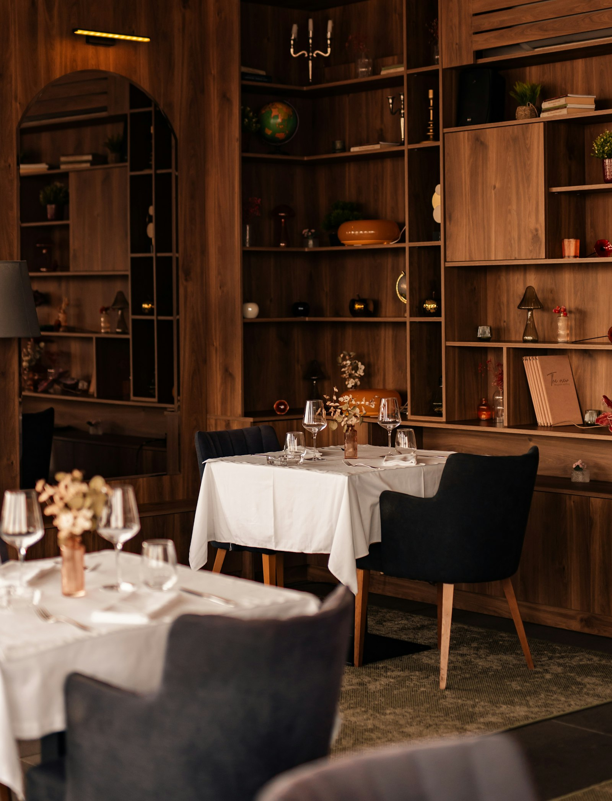
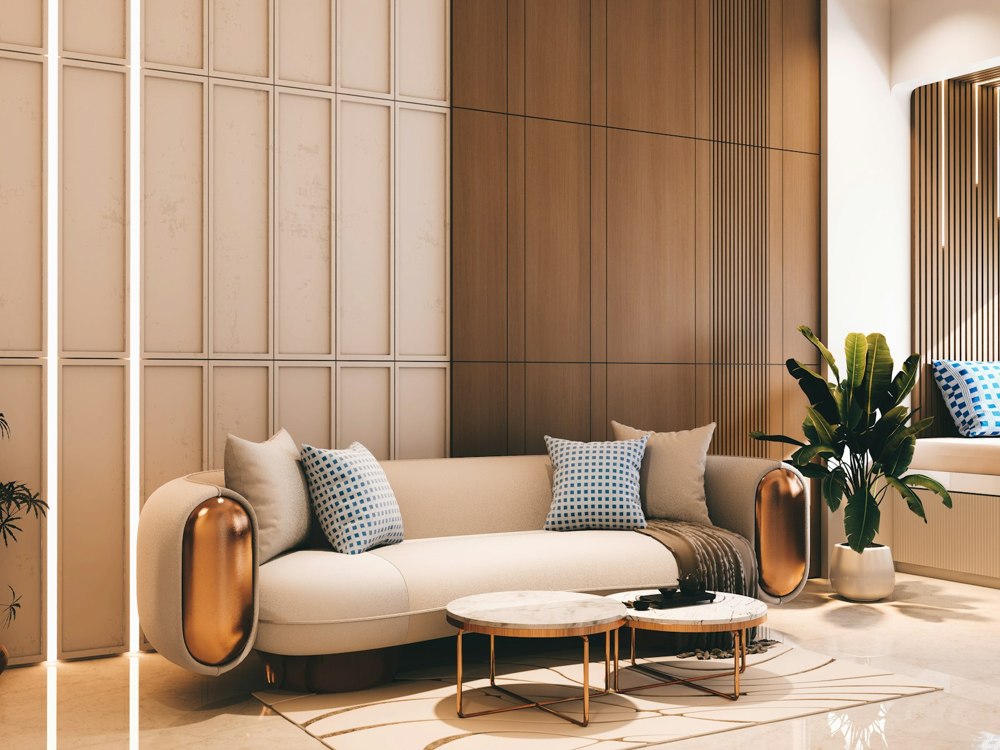

From the Field

Architecture · 12 Min Read
Engineering Invisible Architecture
The integration of HVAC-native diffusion systems into contemporary skyscrapers requires a delicate balance between mechanical precision and sensory poetry.

Hospitality
The New Standard of Luxury Guest Experiences
How the world's leading hotel brands are using olfactory identity to command emotional loyalty — and why the future of luxury is largely invisible.
Artistry
Scent as Sculpture: The Aesthetics of Diffusion
When the diffuser is itself a work of art, the distinction between hardware and sculpture dissolves entirely. A conversation with our design team.

Architecture
Residential Olfactive Curation
Designing private sanctuaries through personalised scent layering and atmospheric zones — where the home becomes a sensory retreat.
Sensory Tech
The Science of Diffusion
Understanding cold-air nebulisation and its impact on essential oil integrity — why temperature matters at the molecular level.
Artistry · Sustainability
Botanical Sourcing Ethics
A journey from the heart of the Grasse region to our global partner estates — and what responsible luxury means when it comes to raw materials.
Scent as the Unseen Fabric of Hospitality
How scent weaves through the guest journey from arrival to memory.
Curating the Summer Note: Bergamot and Slate
Inside our seasonal composition process with our lead perfumer.
The Future of AI-Driven Ambient Scents
Exploring how machine learning is beginning to inform adaptive olfactory environments.
Designing Tranquility for the Modern Workspace
How post-pandemic office design is embracing scent as a wellbeing tool.